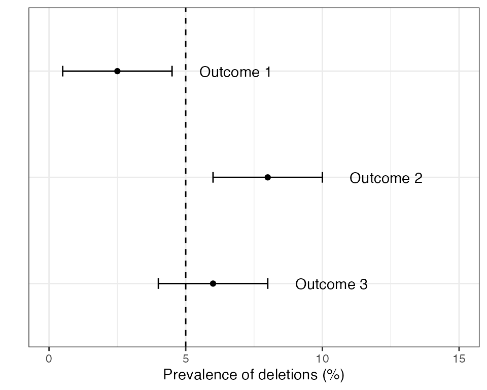

vignettes/rationale1_background.Rmd
rationale1_background.RmdThe majority of malaria diagnosis worldwide relies on rapid diagnostic tests (RDTs). A large proportion of these tests work by detecting the presence of the HPR2 protein in the blood of an infected individual, which reacts to give a positive result. However, Plasmodium parasites have been found in many countries that carry a deletion of the pfhrp2 gene. Without this gene the parasites do not express the HPR2 protein, rendering them invisible to testing by HRP2-based RDTs. This presents a major clinical problem if these gene deletions rise to high frequencies in the population, as patients presenting with symptoms of malaria may be misdiagnosed, resulting in treatment delays or missed cases.
Many ongoing malaria molecular surveillance (MMS) efforts are trying to establish where pfhrp2/3 deletions are in the world, where they have already reached high frequencies, and how patterns are changing in space and time. The spread of pfhrp2/3 deletions is recognised as a global threat to malaria control by the World Health Organization (WHO). The WHO malaria threats map contains a page on pfhrp2/3 deletions where one can browse current patterns or download raw data.
The WHO have also periodically released guidance on how to run a study looking for pfhrp2/3 deletions and how to respond appropriately given the results. One such document that is highly relevant here is the Master protocol for surveillance of pfhrp2/3 deletions and biobanking to support future research, published in 2020. This document gives guidance on a wide range of issues related to pfhrp2/3 studies, including data collection and fieldwork, data storage and laboratory analysis, and providing templates such as informed consent forms for participants.
The recommended approach in the 2020 Master Protocol begins with estimating the prevalence of deletions and constructing a 95% confidence interval (CI) around this estimate. There are three possible outcomes:
Examples of these three outcomes are shown in the plot below:

If outcome 2 is found in any domain within a country then the country as a whole is recommended to switch RDTs to a brand that does not rely exclusively on the HRP2 protein. If outcomes 1 or 3 are detected in all domains then some form of periodic monitoring is still advised, but the urgency is lower.
Publication of the Master Protocol was a major step forward in specifying what a well designed pfhrp2/3 study might look like. However, there were also some issues around power and sample size calculations in this document. Some of these issues were corrected in a later corrigenda to the original protocol, but other statistical issues remain (described in detail later).
The DRpower tool was developed to take a fresh approach to power and sample size calculation for pfhrp2/3 deletion studies, thereby solving some of the issues left by the 2020 Master Protocol. In some aspects we tried to align closely with the original study design - for example assuming a multi-centre study that attempts to draw inference about the prevalence of pfhrp2/3 deletions at a higher geographic level than any single health facility. We also use the same “threshold analysis” approach, in which we want to determine if the prevalence of deletions is above 5%. But in other ways we redesigned the statistics from the bottom up. For example, we took a Bayesian statistical approach, and also changed the way we think about intra-cluster correlation. The hypothesis that we are testing is also subtly different from that presented in the 2020 Master protocol.
Finally, one of our objectives in developing DRpower was to provide greater flexibility at the design stage, while also making the process as simple as possible. This motivated the development of the pfhrp2/3 Planner, which runs the DRpower model in a simple web-based interface.
The next pages go into detail about the issues with the original 2020 Master Protocol, the rationale behind the DRpower Bayesian model, how we estimate power under this model, and what we obtain in terms of minimum sample sizes. However, before jumping into this we should define some terminology.
First, we assume that the study is run at multiple distinct locations, not just a single location. There are many possible terms used for these locations, for example centre, site, cluster, or health facility. We opt for the name site, as it is general enough to allow for different types of facility while also not being a purely statistical term like “cluster”. However, we may occasionally move between terms, for example we refer frequently to the “intra-cluster correlation coefficient”.
We assume that our intention is to pool results over sites in order to estimate the prevalence at a higher geographic level. We refer to this higher geographic level as a domain. This term was chosen to be deliberately vague. The actual meaning of a “domain” may vary from one study to the next, and one country to the next. For example, it may be a “region” in one country, a “province” in the next, or an “ADMIN1 unit” in another. We do not talk explicitly about the ways that choice of domain may impact a study, although it almost certainly will, particularly with reference to the level of intra-cluster correlation.
Finally, we refer to pfhrp2/3 deletions to capture the fact that researchers may be interested in either the pfhrp2 or pfhrp3 locus. The pfhrp3 gene expresses the HRP3 protein, which is structurally similar enough to HRP2 that it occasionally recovers the ability of the test to detect malaria. Therefore, if you are infected with a parasite strain that has the gene deletion for pfhrp2 but not the gene deletion for pfhrp3 then you may still be positive by HRP2-based RDT, although the probability of detection is lower. However, DRpower does not explicitly account for joint analysis of multiple loci and so we assume you are powering for just one set of deletion counts.